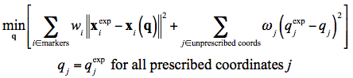

The IK tool goes through each time step (frame) of motion and computes generalized coordinate values which positions the model in a pose that "best matches" experimental marker and coordinate values for that time step. Mathematically, the "best match" is expressed as a weighted least squares problem, whose solution aims to minimize both marker and coordinate errors. The topics covered in this section include:
Marker Errors
A marker error is the distance between an experimental marker and the corresponding marker on the model when it is positioned using the generalized coordinates computed by the IK solver. Each marker has a weight associated with it, specifying how strongly that marker's error term should be minimized.
Coordinate Errors
A coordinate error is the difference between an experimental coordinate value and the coordinate value computed by IK.
What are "experimental coordinate values?" These can be joint angles obtained directly from a motion capture system (i.e., built-in mocap inverse kinematics capabilities), or may be computed from experimental data by various specialized algorithms (e.g., defining anatomical coordinate frames and using them to specify joint frames that, in turn, describe joint angles) or by other measurement techniques that involve other measurement devices (e.g., a goniometer). A fixed desired value for a coordinate can also be specified (e.g., if you know a specific joint's angle should stay at 0˚). The inclusion of experimental coordinate values is optional; the IK tool can solve for the motion trajectories using marker matching alone.
A distinction should be made between prescribed and unprescribed coordinates. A prescribed coordinate (also referred to as a locked coordinate) is a generalized coordinate whose trajectory is known and which will not be computed using IK. It will get set to its exact trajectory value instead. This can be useful when you have enough confidence in some generalized coordinate value that you don't want the IK solver to change it.
An unprescribed coordinate is a coordinate which is not prescribed, and whose value is computed using IK.
Using these definitions, only unprescribed coordinates can vary and so only they appear in the least squares equation solved by IK. Each unprescribed coordinate being compared to an experimental coordinate must have a weight associated with it, specifying how strongly that coordinate's error should be minimized.
Weighted Least Squares Equation
The weighted least squares problem solved by IK is

where q is the vector of generalized coordinates being solved for, xiexp is the experimental position of marker i, xi(q) is the position of the corresponding marker on the model (which depends on the coordinate values), qjexp is the experimental value for coordinate j. Prescribed coordinates are set to their experimental values. For instance, in the gait2354 and gait2392 examples, the subtalar and metatarsophalangeal (mtp) joints are locked and during IK they are assigned the prescribed value of 0˚.
The marker weights (wi's) and coordinate weights (ωj's) are specified in the <IKMarkerTask> and <IKCoordinateTask> tags, respectively. These are all specified within a single <IKTaskSet> tag, as will be outlined in How to Use the IK Tool. This least squares problem is solved using a general quadratic programming solver, with a convergence criterion of 0.0001 and a limit of 1000 iterations. These are currently fixed values that cannot be changed in the XML files.
Important Note about Units
The least squares solution is affected by the choice of length and angle units. The units used by IK are the model's units, which are meters for length and radians for angles. This is important, for example, if you wish to compare these results to a different IK solver that uses degrees for measuring coordinate errors. In order to get similar results using OpenSim's choice of radians as units, you should alter the weightings accordingly: scale each coordinate's weight by \displaystyle\left(\frac{180}{\pi}\right)^2 (so to achieve a weight of 1 with a degrees-based IK solver, use \displaystyle\left(\frac{180}{\pi}\right)^2 for the weight in the IKTool in OpenSim, which is radian-based).
Next: How to Use the IK Tool
Previous: Getting Started with Inverse Kinematics
Home: Inverse Kinematics
{kind=link}
{kind=link}
{kind=link}